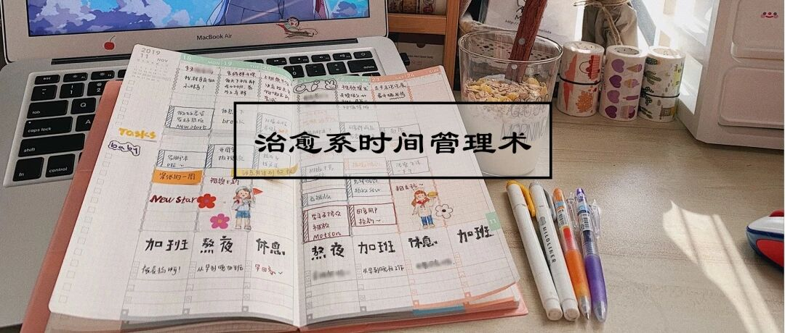

攻略|我的每周期待，都是自己给的
一 起 创 造 美 好 生 活

图：@秋秋
文：@秋秋
大家好，又见面了～
众所周知，我是一个手账儿（如果都不知道，那现在也不晚🙈），所以这次入手国誉自我手账也2个多月了，想来说一下我时间规划上的一些心得。

（每天写的满满----）
开始之前
先说一下我的情况。我对手帐本的基本原则，那就是——规划生活。
之前用的hoboweeks，虽然也可以分配每一天的任务，但是无奈可以写的太少，于是现在用国誉自我，真的快乐翻了！
当然也有很多人做手账是对每一天的简单复盘，这样也是可以的。但是我个人而言，只是去记录满满的一天，事后很难找到主题，而且重复上班下班吃饭这种事，我会觉得没意思。所以我的手帐本还是以规划为主。
下面就具体介绍一下我具体使用的方法了：
1.为这周定个主题
别说这一周你都没想过具体干啥？其实我之前也没有想过🙈，但是突然有一天突发奇想，能不能每周都给自己一个新尝试？
所以现在 我会每周给自己设立一个主题，就是用便利贴贴在这周规划的上面👇，这个主题可以很简单，比如好好生活、早起、早睡，又或者好朋友联系周等等～

比如我有一周是“养生的一周”，这一周就会刻意早睡觉、吃早饭、睡前阅读。
每周给自己定一个主题（切记只有一个），这样每一周都会有期待，而好习惯也是这样慢慢积少成多，不知不觉就会变的更好。
2.写下每周的规划
定好主题后，就开始写下具体的规划。通常我会用白色便利贴先贴上task，然后将本周的事情进行细分。这里建议一周要做的事情不要太多。

《单核工作法》上说过，快捷清单是必不可少的一环。每天早晨，你都要写下最多5项短小、可行动的任务，做完一项就删掉一项。而超过5个，就必须删除其他的来达到平衡。
基于这个，我一般会定5个主要计划，比如看的书、综艺、学的技能等等。当然有些事情是固定要去做的，比如我的工作是拍摄和剪辑，有时也会写进去。
3.每天的工作安排
完成周计划之后，再将工作进行每天的细分。因为每天9.30—6点我要上班，所以可支配的时间就是上班前的2小时和晚上8-11点的时间（中午午休的时间一般会拿来看剧）。
这样一天有5个小时属于自己的学习时间，通常我这么支配：
（1）上面写总规划
国誉自我手账本的内页还是非常大的，所以在每天的时间轴上，我习惯先写下这一天的总规划（也就是一天的主题），比如视频剪辑、出去看展之类的，这个总规划只写这一天要做的与众不同的事情，类似一天的主题。

（2）中间写每日心得
总规划下面，我通常会写一天的感悟（通常会事后填写）。记下大事件，比如搬家、猫做绝育，我被表扬了的感悟等等。

（3）最后给今天定下结语
最后在手账最下面，我会用比较大一点的字来写这一天印象深刻的事，比如“加班”“熬夜”“早起”等等。这样一眼看过去非常好回顾，才能更好的监督自己的生活。

（一眼看过去就是大字——）
为什么只写一天的总规划？
按道理来说，应该是把周计划分解为每天要做的事，但是因为我每天上班前两小时固定为学习时间，晚上8-10点固定为写作时间，所以一天的总规划上就不会再写这些事情（因为每天都要做），只有这一天要特别做的。
4.回顾每天的开心不足
这一点我是觉得非常重要的，以前我很少去刻意的观察我的情绪，比如我几点起最开心，什么事情会让我炸毛。但是有一天我看知乎发现这些也是可以被记录的（毕竟有些人连梦、如厕次数都会记录）就尝试起来了。
我尝试的方法是在最下面的地方进行每天的心情回顾，比如值得我今天开心的事和我不开心的事。这样2个月下来我发现，我会在写作、工作被表扬、和朋友玩的时候最开心，而不开心就是做事见效缓慢；而对生活琐事，比如搬家、家电坏了等，我一般不会太在意（以前我可不知道我的情绪是这样）。

所以记录自己每天的开心与不开心，真的更能了解自己。当然，除了了解自己，还可以帮你找到快乐来源！想想一周结束后再回去看，每天的开心就变得近在眼前！
☕️
当然，尝试了这么多，我也走过很多误区，所以这几点小建议一定认真读完：
不要为了满而写很多
其实做手账，就是为了更好的记录并调整自己的状态。为了好看与不浪费纸而写的很多，这样就会陷入误区。很多妹子做手账是为了美感，或者为了记日记，这些都是可以的，我赞同的是有自己清晰的目的而不是盲从。
2
设立的主题可以有很多种
设立主题方面，应该是我近期最有用的新尝试了，所以再说一说。一周主题除了“好好生活”“养生的一周”等等，以下也可以作为新尝试：
电影/综艺
如果你刚开始就有规律的学习也许很有困难，那我建议从看综艺或电影开始。具体的话，你可以一周按一个类别或者一个导演去看：比如这一周的主题是周星驰电影，下一周是徐克电影，或者本周是60年代电影，下周是70年代电影。

这样分类别会比随便看事后回顾更有趣（毕竟我今天看这个明天看这个往往最好都记不清），说不定你还会因此获得新爱好，比如成为周星驰的fans或者70年代电影的忠实观众。
读书
和上面的电影类似，我最近一个月都是在按作者读书。开始的原因是看了莫言的《蛙》，突然对六七十年代的事很感兴趣，于是就把莫言的好几本书都买了回来。

然后感觉像发现新大陆。按照作者来读书会让你对这个作者的文风更有感觉。当然，你也可以按言情、武侠、工具书这种类别来读，说不定未来你就会成为某个领域的专家！
健身
除了学习之外，我还建议大家可以把一周的主题定为健身。我以前也是个懒汉，每天睡不够那种。但是自从某一周的习惯改为早起后，就能做到按时起床了。

所以那些优秀的好的习惯都可以定位你的新尝试！别人都在努力去做的，干嘛不给自己一个机会试一试呢？
社交
这个我目前还没有做，但是我觉得还挺有意思，就是具体某一周的可以是和朋友联系的一周。这些朋友可以是以前的同学、老师，也可以是加我好友的你们等等。
也许我们在现在的日子往前走的越来越快，但是却都忘了回头看看。有这么一个主题和朋友联系，我觉得是一个很好的机会。
3
对新尝试进行复盘
最后，我还要补充一句：要记得定期对你的新尝试进行复盘。

所有以上的尝试，我觉得都是为了找到你的舒适区。所以你可以给自己一周的时间做个新尝试，如果好就坚持，如果不好，就停止（其实知道做什么不开心，有时候比做什么开心更重要，因为可以避免踩雷）。
热依扎曾在奇葩上说过一句话我印象深刻：抑郁症最可怕的不是每天想死1万次的冲动，而是会对一切失去兴趣。

所以我想，对一切充满兴趣也是一种很重要的能力。而这种兴趣和期待，我觉得是自己给的。
定下你的这周主题并去实践，也许你的生活真的从今天开始不一样了!
其他文章推荐：

原创文章，转载请告知本人并标注来源
工作联系VX：17865514429
请注明来意 :)
@微博：秋秋一日甜
喜欢记得星标，让我们一起成长